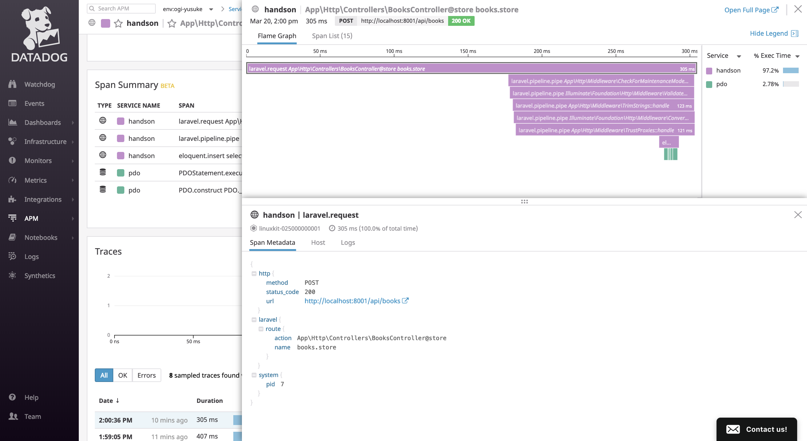

docker-composeで起動
概要¶
Datadogはサーバー上だけではなく、ローカルでも動かすことができます。
単純なメトリクスだけでなくでAPMも動かすことができるので、開発環境でもDatadogを役立てていきましょう
docker-composeで動かす準備¶
まず、 docker-compose.yaml で定義されているdatadogを起動します。
Datadogを動かすための定義がコメントアウトされているので、コメントアウトを外してdocker-composeで動かす準備をします。
- # datadog: - # image: datadog/agent:latest - # environment: - # - DD_API_KEY=${DD_API_KEY} - # - DD_TAGS=env:${USER} - # - DD_APM_ENABLED=true - # volumes: - # - /var/run/docker.sock:/var/run/docker.sock:ro - # - /proc/:/host/proc:ro - # - /sys/fs/cgroup:/host/sys/fs/cgroup:ro - # #XXX: Datadogのログ出力が多すぎるため、ログを破棄 - # logging: - # driver: 'none' + datadog: + image: datadog/agent:latest + environment: + - DD_API_KEY=${DD_API_KEY} + - DD_TAGS=env:${USER} + - DD_APM_ENABLED=true + volumes: + - /var/run/docker.sock:/var/run/docker.sock:ro + - /proc/:/host/proc:ro + - /sys/fs/cgroup:/host/sys/fs/cgroup:ro + #XXX: Datadogのログ出力が多すぎるため、ログを破棄 + logging: + driver: 'none'
環境変数の受け渡し
DD_API_KEY=${DD_API_KEY} のように記述することで、ホストマシンの環境変数(右側)をコンテナへ展開することが可能です。
ここでは秘匿情報である DD_API_KEY と、どのマシンでdatadogが動いているか確認するために USER をコンテナ上へ展開します。
DatadogのAPIキーを取得¶
まずはDatadogへログインし、APIキーを取得しましょう。
https://app.datadoghq.com/account/settings#api
取得したAPIキーはdocker-composeから参照できるようローカルの環境変数へ展開します。
$ export DD_API_KEY=6d6xxxxxxxxxxxxxxxxxxxx
docker-composeの起動¶
ホストマシンへ DD_API_KEY の環境変数を展開したあとはdocker-composeを立ち上げるだけです。
$ docker-compose up
http://localhost:8001/ へアクセスし、起動しているか確認しましょう。
datadogで確認¶
今回立ち上げたdatadogはホストマシンで立ち上げているDockerコンテナと、LaravelのAPMを有効化しています。
Datadog上でそれぞれのダッシュボードを見てみましょう。
起動しているコンテナの確認¶
起動されているDockerコンテナを一覧でみることができます。
https://app.datadoghq.com/infrastructure/map?node_type=container
APMの確認¶
APMを使うことでローカルでもスロークエリの発見や分散トレースを試すことが可能です。
https://app.datadoghq.com/apm/services
APM一覧に入ったあとは画面上部の env から自分の名前を選択します。
APMは様々な情報を取得することができます。
この機会にDatadog APM にどのような機能があるのか見てみましょう。
e.g.
